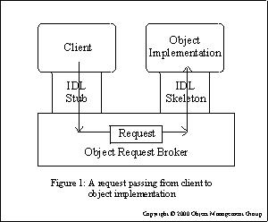

On components

An illustration of the use of components
There isn't much consensus on what constitutes a component. Although this is not complete and may seem to general we can say that a component is a unit of software with the following characteristics:
It is an indivisible unit of independent deployment . The component must be independent from the environment and other components and, so, has to encapsulate it's features. It also can't be partially deployed since it constitutes an whole.
It is a unit of third-party composition. A party exterior to at least one component must be able to compose them together. The component has to be self-contained, interface hiding and provide a well defined interface
Has no persistent state. This way, any copy of a component won't differ from the original so that, at most, one copy of the component is present.
A typical use is in big, complex and heterogeneous projects divided in different parts, each with its particular function and interacting with other parts of the project, being developed by different teams and where each part doesn't want to know how the other parts are implemented or where they are located. Basically, each part constitutes a component. An interface contract for each component is established and interaction is done through these interfaces.
Another example can be found in desktop environments. Imagine a user writing a document or a web page where he wants to integrate a graphic. Putting graphics functionality in the word processor or web page editor would be overloading them (how about audio, movie, barcharts...?). Doing it outside and importing as an image is also not the best solution. But if there is already a mechanism for handling that functionality why not reuse it? Basically, the idea is to "embed" the graphics mechanism in the word processor or web page editor (something like: "when handling this data use this particular mechanism"). But to have a good interaction between mechanisms we need independence, interface contracts and again components appear as a good solution for this.
The key aspects in component-based development are [1] :
Standardised parts and services (both through the standardisation of components and the environment in which they operate.)
Minimal or no contact between entities designing components; decoupling of development efforts.
Access to practical (re)use both internal and external through standardised interoperability, configurability, and deployment.
Independent variability through documentation of components 'seams' (the interfaces used and exposed).
Source code for custom needs; binary components for standard needs.
A strict emphasis on component assembly first; manual coding second.
A robust mechanism for the delivery of architectures, frameworks, and services.
But to conform with this characteristics it is necessary to complement the definition above with a list of requirements that must be met[1][2]:
A component must be loosely coupled with other components via interface definitions and implementation separation.
A component must explicitly identify both the interfaces it uses and exposes, and/or the service categories it uses and exposes.
A component has an unbreakable contract with all of its clients by virtue of the services its interface promises to deliver (design by contract).
A component must be deliverable in binary form (black box).
A component must use and expose services through standardised middleware services (DCOM, CORBA, JavaBeans, etc.)
A component must be configurable at design-time/run-time through a standardised interface (such as ActiveX and JavaBeans property sheets or standard configuration files).
A component must be interoperable with other components across processes, machines, networks, languages, operating systems, transaction environments, and tools.
A component should make use of standardised infrastructure services such as security, licensing, versioning, life-cycle management, visual assembly, event notification, configuration, scripting, metadata, introspection, persistence, relationships, administration, management, debugging, and installation.
A component should be able to wire itself into a collaboration with other components solely via design-time/run-time configuration.
One of the keywords in component-based technology is middleware. Middleware is now a very popular term and is basically used to refer to software "that sits in the middle, connecting diverse (and usually preexisting) programs together". In other words, a separate product that acts as a glue between two applications.

A request passing from client to object implementation (from the OMG documentation)
CORBA is one of the most popular architecture and specification for creating software components. It provides the functionality required as middleware. CORBA stands for Common Object Request Broker Architecture and is defined by OMG. Its building blocks are:
OMG Interface Definition Language, OMG IDL which defines mappings for a variety of different languages and which purpose is to abstract from the language being used to implement the component so that they all have a common language.
The Object Request Broker or ORB which handles requests from programs to components and between components enabling abstraction of where the program that receives the request and the one sending are.
The standard protocol IIOP which provides a standard communication between different ORBs above TCP/IP.
CORBA provides, with these building blocks, independence of language and independence of platform.
As an example, GNOME implemented BONOBO in order to comply with interoperability between different applications in the desktop (e.g, embed a graphics object in a word processor document). BONOBO is basically a set of CORBA interfaces and an implementation in GNOME/GTK+ of these interfaces that are designed to be simple to use and hide CORBA and between-components protocol used. An application uses these interfaces to export its functionality or integrate other components functionality making it possible to edit a graphic or even play GnoMines in a spreadsheet.